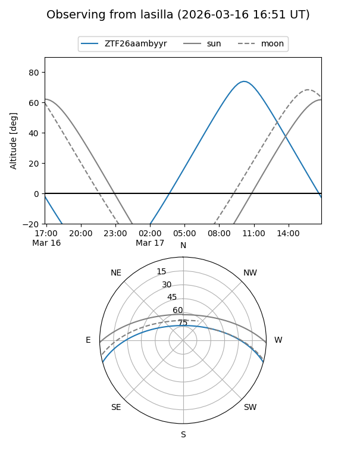
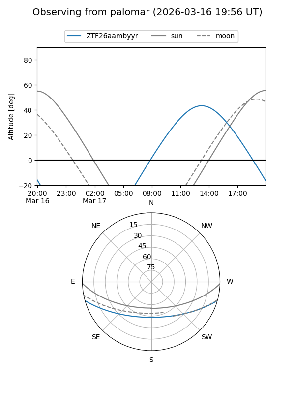

ZTF26aambyyr
Target ZTF26aambyyr at 2026-03-16 14:11
Aliases and brokers:
FINK: link
Lasair: link
ALeRCE: link
alt names
ZTF26aambyyr (ztf,fink_ztf)
Coordinates:
equatorial (ra, dec) = 256.3359,-13.22491
equatorial (HMS+DMS) = 17:05:20.62,-13:13:29.69
galactic (l, b) = (8.1664,+16.41428)
Flags:
Photometry:
last ztfg=16.12
1 ztfg detections
Lightcurve
Visibility


Additional plots